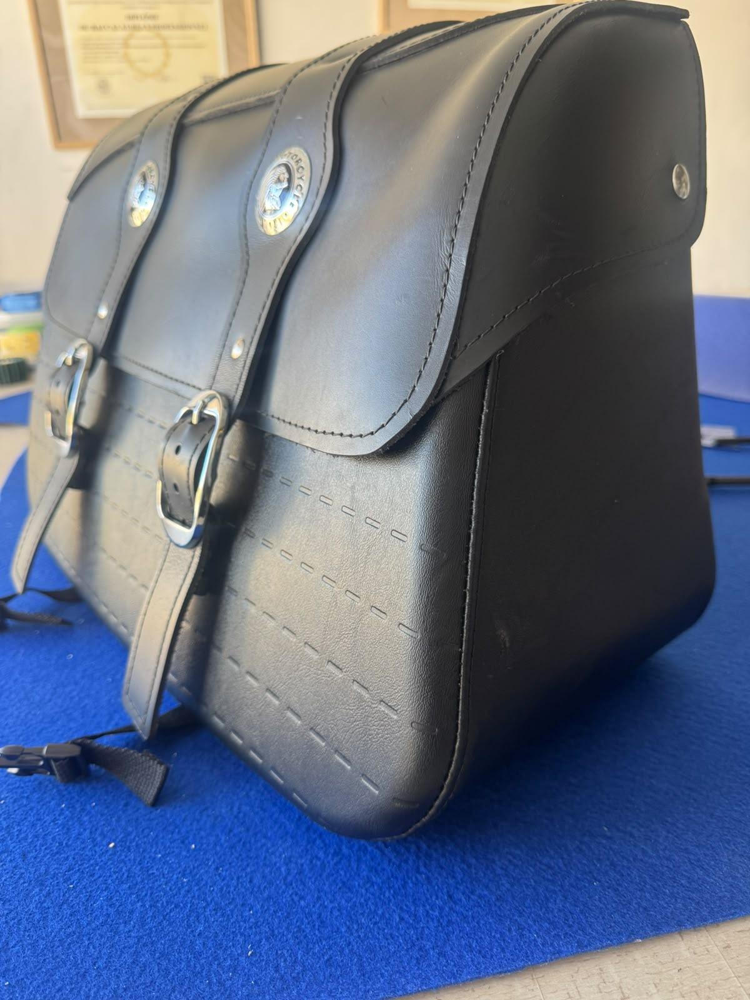
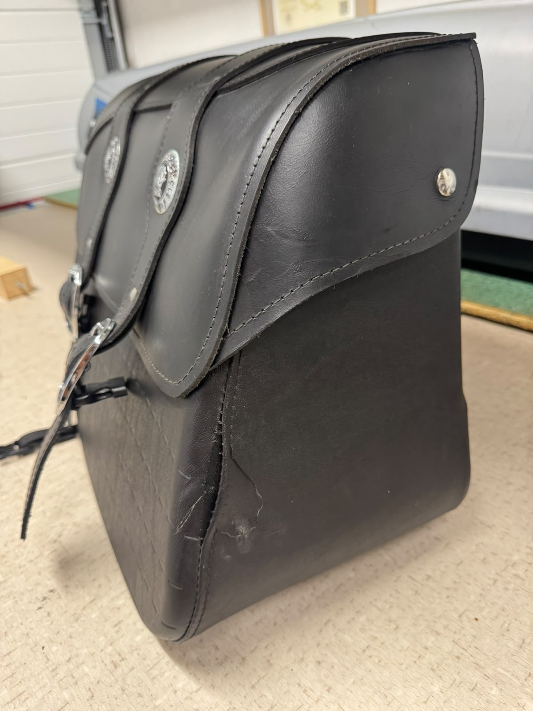

Réalisations
Photos et vidéos de réalisations en atelier
Ici, on présente les projets terminés avec des photos et des vidéos de réalisation, pour montrer le résultat final et le travail en cours
Avant / Après
Faites glisser le curseur pour comparer
Sacoche moto en cuir
Couture d’angle déchirée et cuir fatigué : reprise de la couture et remise en état de la sacoche, dans le respect de la pièce d’origine.




Photos de réalisations
Quelques exemples de pièces terminées
Vidéos
Vidéos de réalisations
Aperçus visuels du chantier et de la finition
Vidéo
Intérieur cuirVoiture de collection : sièges, garnitures et ciel de toit
Contact
Parlez-nous de votre projet, nous vous répondrons rapidement
Décrivez la pièce, son état actuel et le résultat souhaité, nous vous orienterons vers la meilleure solution technique et esthétique